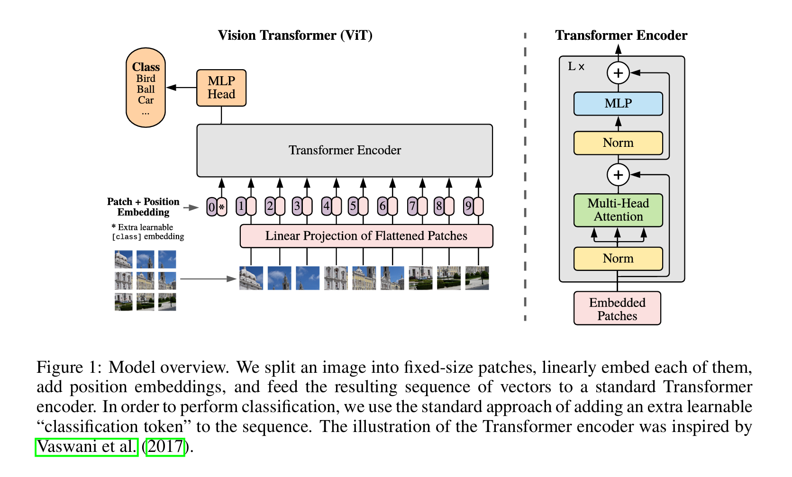
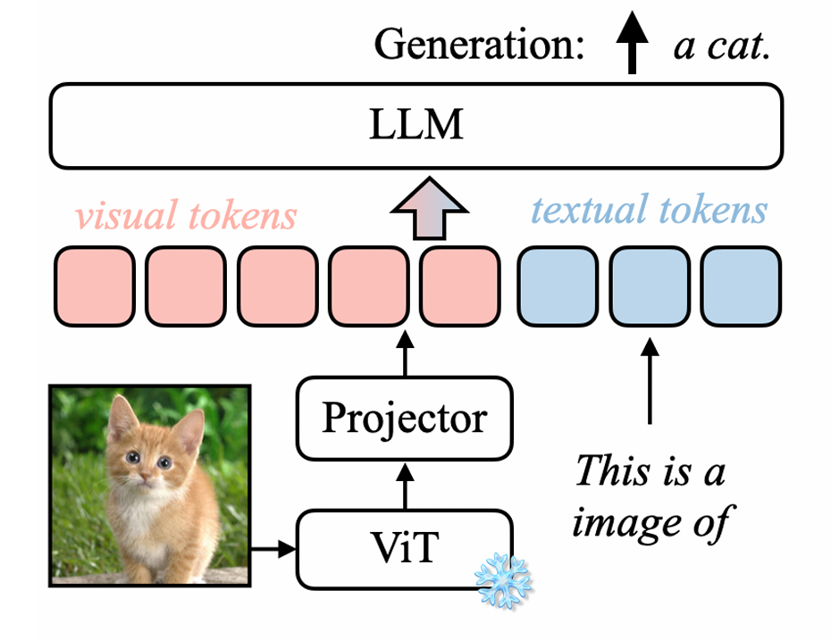
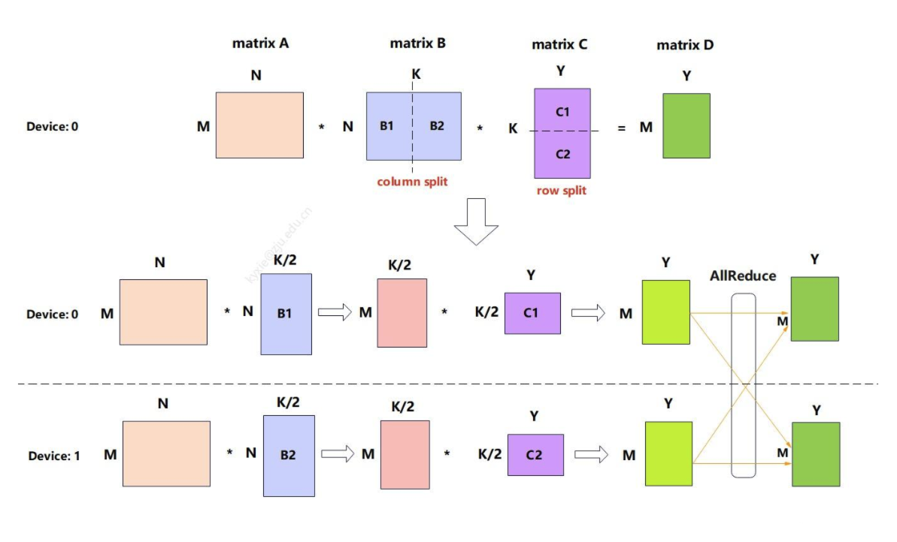
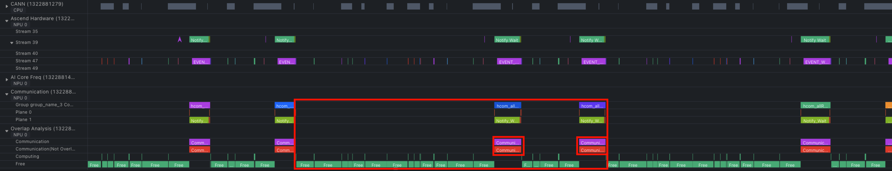
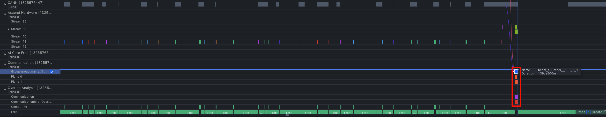
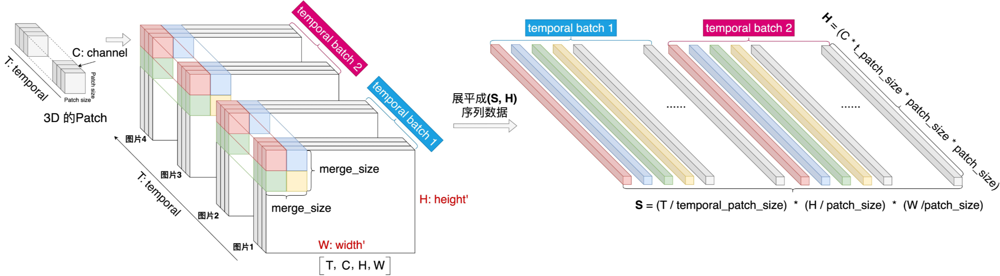
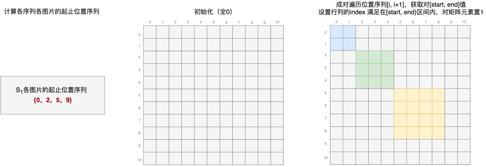
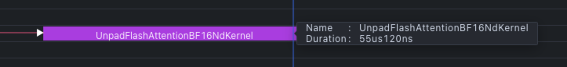
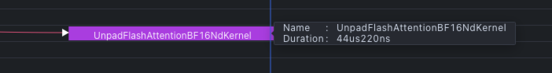

一、引言 #
在多模态处理的 Pipeline 中，ViT（Vision Transformer）和 DiT（Diffusion Transformer）是最常见的处理模块。其中，ViT 在多模态模型中的角色类似于自然语言建模中的 Tokenizer 组件，负责对图像进行视觉特征编码，产出图像的特征序列，只不过 ViT 的编码过程本身也采用了 Transformer 模型结构。
目前，以 vLLM 和 SGLang 为首的开源推理框架针对纯语言模型的特性和优化已愈发完善，而随着多模态模型的快速发展，涌现出了诸如 VL、Omni、TTS 以及 Diffusion 等各式各样的多模态模型，这些开源推理框架针对多模态理解和生成的推理技术还有待完善。
本文将以 vLLM 为例，分享我在工作中学习并积累到的一些针对 ViT 模块的性能优化手段。
二、多模态推理概述 #
2.1 多模态模型的分类 #
目前，根据模型输入和输出所支持的模态，多模态模型可以分为：
- 多模态理解模型：输入为“文本/图像/视频/音频”，输出为“文本”，模型的任务是理解而不是创造图像或视频。一般由 ViT + 自回归的 LLM 组成，比如：Qwen3-VL、Intern3-VL、DeepSeek-OCR 等；
- 多模态生成模型：输入为“文本/图像/视频/音频”，输出为“图像/视频/音频”，这些模型一般理解能力较弱，但生成图像或视频的能力很强。一般由 DiT 作为视觉等多模态生成的组件，比如：Stable Diffusion 等；
- 多模态理解与生成统一模型：输入为“文本/图像/视频/音频”，输出为“文本/图像/视频/音频”，模型不再区分 Encoder 和 Generator，而是将所有模态都看作是 Token，统一放到同一个表示空间中进行处理。一般由自回归的 LLM + DiT 组成，包括多种模型架构，比如：Qwen3-Omni、Qwen-Image、BAGLE 等。

关于“多模态理解与生成统一模型”，让我们更进一步，再来看看 Qwen3-Omni、Qwen-Image、BAGLE 这三条技术路线的区别：
- Qwen3-Omni：以 LLM 作为主结构，采用 Thinker–Talker 架构，其中 Thinker 负责思考（跨模态理解、推理），Talker 负责表达，Codec 支持低延迟流式语音生成；
- Qwen-Image：以 DiT 作为主结构用于多模态生成，以 LLM 作为多模态理解组件，跨模态推理能力弱，但图像生成能力更强；
- BAGLE：以 LLM 作为主结构，以 DiT 作为视觉等多模态生成的组件，是一种统一生成世界模型，可以直接预测多模态 Token，理解能力和生成能力都比较强。

目前，vLLM 主要聚焦的是多模态的理解能力，而与多模态生成相关的能力则放到了 vLLM-Omni 项目中。vLLM-Omni 是一个 vLLM 主仓的扩展项目，聚焦全模态理解和生成能力，感兴趣的读者可以去 GitHub 上看看。
2.2 多模态理解模型的推理流程 #
本文将主要聚焦于“多模态理解模型”，以 Qwen-VL 系列模型为例，其推理流程大致如下：
- 多模态输入预处理：
- (1) 提取图像输入：vLLM 从请求的 JSON Payload 中将多模态输入（这里以图像为例）提取为 Python 对象；
- (2) 统一输入格式：vLLM 的 Preprocessor 将图像数据转换成模型能够识别的输入格式（像素值 Tensor），处理步骤包括：Resize、Pad、归一化等；
- 多模态输入编码：
- (1) 图像切块并做卷积：vLLM 先将输入图像按
(patch_size, patch_size)切分为许多固定大小的 Patch（即图像 Token），再将相邻的(merge_size, merge_size)个 Patch 按顺序放到一起，便于后续 PatchMerger 做特征压缩；然后，将这些 Patch 展平为 1D 向量，即flatten_patches，其 Shape 为(num_patches, num_channels * patch_size * patch_size)，同时生成grid_thw用于记录每张图片切 Patch 后在时空维度上的 Patch 数量；最后，通过 Patch Embedding（3D 卷积操作）将flatten_patches映射为hidden_states，其 Shape 为(num_patches, hidden_size)； - (2) 计算 2D-RoPE：根据
grid_thw计算 2D-RoPE，得到rotary_pos_emb_cos和rotary_pos_emb_sin； - (3) 图像特征编码：ViT Encoder（Attention）对
hidden_states进行编码（需要先对 Q/K 做 Rotary Embedding），生成图像特征序列； - (4) 图像特征压缩：ViT PatchMerger（MLP Projector）对图像特征进行压缩，将每
(merge_size, merge_size)个图像特征映射为一个输入表征；
- (1) 图像切块并做卷积：vLLM 先将输入图像按
- 文本输入预处理：
- (1) 提取文本输入：vLLM 使用 Huggingface Tokenizer 提供的
apply_chat_template()将文本从 JSON 格式转换为 ChatLM 格式（如：<|im_start|>...<|im_end|>）； - (2) 更新模态占位符：根据 ViT 输出的 Token 数量，调整 Prompt 中为图像特征预留的模态占位符
|image_pad|的数量； - (3) 文本特征映射：Tokenizer 将文本 Token 映射为
input_ids并做词表 Embedding；
- (1) 提取文本输入：vLLM 使用 Huggingface Tokenizer 提供的
- 文本输入与图像特征合并：将输入 Prompt 中为图像特征预留的模态占位符
|image_pad|替换为我们编码过后的视觉 Embedding； - LLM Prefill：将合并后的整个输入喂给语言模型，让它去做 Prefill 计算，生成初始的 KV Cache；
- LLM Decode：语言模型自回归地生成后续 Token，并更新 KV Cache。


关于 ViT 模块的更多原理和细节可以参考这篇文章：
关于 Qwen-VL 系列模型的更多原理和细节可以参考这几篇文章：
- 多模态技术梳理：Qwen-VL 系列
- Qwen2-VL 源码解读：从准备一条样本到模型生成全流程图解
- 万字长文图解 Qwen2.5-VL 实现细节
- 深度研读 Qwen3-VL：当视觉模型学会“慢思考”与 256K 超长视野
2.3 多模态推理的性能瓶颈 #
以 VL 模型为例，对于短输出请求（即 max_completion_tokens 较小的请求），在其推理的整个 Pipeline 中，耗时主要集中在输入预处理、ViT 编码以及 LLM Prefill 这三个阶段。其中，ViT 模块为 Compute-Bound（类似于 LLM Prefill，不需要自回归地读 KV Cache），直接对整个输入进行计算并生成对应的视觉特征。稍后我们将介绍针对 ViT 模块的一些常见性能优化手段。
另外，在整个推理引擎层面，vLLM 通过将预处理进程与模型实际推理进程分离（异步处理、互相掩盖）、视觉预处理 Cache、视觉 Embedding Cache 跨请求共享以及 EPD（Encoder-Prefill-Decode）分离等手段极大地提升了多模态推理的性能。关于这一部分，后面有机会再另写文章做详细的介绍。
三、常见 ViT 性能优化手段 #
3.1 使用 ViT Encoder DP 代替 TP 减少通信开销 #
当我们需要加载的模型比较大时，一张卡可能放不下整个权重，这时我们就会用 TP（Tensor Parallel）切分权重并放到不同的卡上。通过这种方式，每张卡上的计算量减少了，因此计算延迟会更低，但缺点是引入了额外的通信开销。
一种经典的切分方式是先“列切”，中间各自做计算，然后再“行切”，最后做一次 AllReduce。通过这种方式，避免了多次 AllGather，只需最后做一次 AllReduce，并且中间值的计算量和存储大小减半。

以 Attention 计算为例，当采用 TP 时，一般会对 qkv_proj 做列切（在 vLLM 中使用 QKVParallelLinear 实现，包含对 MQA/GQA 的特殊处理），对 out_proj 做行切（在 vLLM 中使用 RowParallelLinear 实现），最后接 AllReduce 操作。
上述这种组合模式就是《LLM 推理并行优化的必备知识》这篇文章中介绍的“场景四”，关于 TP 切分的更多方式和分析也可以参考这篇文章。
对于 ViT Encoder 来说，由于其参数量较少，使用 TP 切分带来的收益并不大，反而会引入额外的通信开销。
如下图所示，红框内的部分为一个 ViT Block，每层都会做两次 AllReduce。

- 第一次 AllReduce：对 Attention 的输出做
out_proj，采用行切的方式，然后做第一次 AllReduce； - 第二次 AllReduce：MLP 的
gate_up_proj做列切，down_proj做行切，然后做第二次 AllReduce。
ViT Encoder DP Mode：
为了减少通信开销，vLLM 引入了一种单独对 ViT Encoder 使用 DP（Data Parallel），LLM 部分仍然使用 TP 的机制，可以避免 TP 模式下每层两次的通信操作。在多 Batch 场景下，使用 ViT DP 可以在 Forward 前把图像数据 Shard 到多张卡上，中间过程不需要再通信，只需在最后调用一次 AllGather 来收集每张卡上的结果。

具体地，vLLM 提供了 ColumnParallelLinear、QKVParallelLinear 以及 RowParallelLinear 等线性层，其内部实现了针对 TP 场景下的权重 Shard 逻辑。在 ViT Encoder DP 场景下，vLLM 可以通过从用户配置中获取是否 use_data_parallel 配置，并传入这些线性层的 disable_tp 参数来禁用权重 Shard。
另外，通过使用 run_dp_sharded_mrope_vision_model() 方法封装 ViT 的处理流程，vLLM 实现了 DP Shard 的视觉模型推理，专门用于支持 MRoPE 的视觉模型。
run_dp_sharded_mrope_vision_model() 方法的核心功能包括：
- 负载均衡：根据每张图像的 Patch 数量（而非图像数量）将图像分配到不同的 GPU 上，确保各 GPU 的计算负载尽可能均衡（因为这些模型支持动态分辨率输入，即不同图像可能有不同的 Patch 数量）；
- 分片处理：每个 TP Rank 只处理分配给它的图像子集，避免重复计算；
- 结果聚合：通过
tensor_model_parallel_all_gather()收集所有 Rank 的输出，并恢复到原始图像顺序。
🌰 举个例子：
假设有 4 张图像，它们的 Patch 数量分别为 [1000, 100, 200, 50]，共有 2 张 GPU。在这种情况下，ViT Encoder DP Mode 的处理流程如下：
- 负载均衡分配：
gpu_0：image_0（计算量：1000 个 Patch）；gpu_1：image_1/2/3（计算量：100 + 200 + 50 = 350 个 Patch）；
- 两张 GPU 各自独立处理被分配的图像数据；
- 使用 AllGather 收集两张卡上的结果；
- 恢复原始输入顺序：
[image_0, image_1, image_2, image_3]。
该特性由 PR #22742 引入，可以通过 --mm-encoder-tp-mode data 开启。以 Qwen2.5-VL-72B 为例，PR 中的 Benchmark 结果表明开启 ViT DP 后，TTFT 减少了大约 55%，整体吞吐提升了大约 47%。
关于该特性的更多信息可以参考 vLLM 的官方文档：Batch-level DP for Multi-Modal Encoders。
3.2 使用 img2col 算法优化卷积计算 #
以 Qwen-VL 系列模型为例，其 ViT 计算的第一步就是做 Patch Embedding，输入为已经按 (patch_size, patch_size) 切好的 flatten_patches，其 Shape 为：
- 图像输入：
(Number of patches, Number of channels * patch_size * patch_size) - 视频输入：
(Number of patches, Number of channels * temporal_patch_size * patch_size * patch_size)

通过 Patch Embedding，flatten_patches 会被转换成 hidden_states，从而便于后续 ViT Encoder 做进一步的处理，其 Shape 为 (num_patches, hidden_size)。
这一步本质上是一个 kernel_size = stride 的 3D 卷积运算，但是可以通过将卷积核的权重转换为一个二维矩阵，然后输入和这个二维矩阵直接做一个大的矩阵乘得到最终的结果。通过这种方式，极大地提升了卷积计算的性能，这就是“img2col 算法”。
关于该算法的更多原理和细节，可以参考我之前写的这篇文章：
目前，通过调用 PyTorch 提供的 F.conv3d 接口（其底层会用到已经优化过的 CuDNN 算子），我们直接就能获得较好的性能收益。
3.3 使用 Cos/Sin Cache 优化 RoPE 计算 #
在 Qwen-VL 系列模型中，其 ViT 模块引入了 2D-RoPE 相对位置编码，使模型对长序列建模有更好的泛化能力。这里之所以用 2D-RoPE 而不是 3D-RoPE，是因为 ViT 的主要作用是负责提供单图/单帧上的特征，而时间维度上的关联性，则由主模型中的 3D-MRope 负责。
具体地，以 Qwen2.5-VL 为例，其 2D-RoPE 的计算流程如下：
- 初始化时预计算 Cos/Sin 缓存：vLLM 中的
RotaryEmbeddingBase类提供了一种 Cos/Sin Cache 机制——在创建RotaryEmbedding模块时，它会根据我们传入的base和max_position等参数，提前计算好 Cos/Sin Freq 并存入一个 1D Cache，其 Shape 为(max_position, rotary_dim)，Cos 和 Sin 各占一半，即rotary_dim // 2； - 为每张图像/视频计算 2D 空间位置 ID：根据输入的
grid_thw，计算每个 Patch 的hpos_ids和wpos_ids，然后做 Spatial Merge 分组重排，使相邻的 Merge Unit 在序列中连续。spatial_merge_size=2意味着相邻的2 × 2 = 4个 Patch 最终会被合并为一个 LLM Token，这里将它们在序列中排列到一起（调换顺序并做flatten()），便于后续 PatchMerger 做特征压缩；接着将hpos_ids和wpos_ids拼接，然后将 T 帧的位置也全部拼接，得到当前图像/视频的pos_ids，其 Shape 为(t * h * w, 2)，每一行都是一个 Patch 的位置(hpos_id, wpos_id)； - 从 Cos/Sin Cache 中查表，分别编码 H 和 W：从 Cache 中获取前
max(h, w)个位置的值，切成两半就得到 Cos Freq 和 Sin Freq，其 Shape 为(max(h, w), rotary_dim // 2)。然后，为每个 Patch 同时查其hpos_id和wpos_id对应的 cos 值，比如：当前 Patch 的位置为(2, 3)，那么就会分别查到 Cos Freq 中的第 3 个和第 4 个值（索引从 0 开始），然后将这两个值拼接到一起得到cos_combined，其 Shape 为(t * h * w, rotary_dim)。这就是 2D-RoPE 的核心——前rotary_dim // 2维用 H 位置的 Cos Freq 编码，后rotary_dim // 2维用 W 位置的 Cos Freq 编码，即用 H 和 W 各自独立的位置频率拼接成完整的rotary_pos_emb_cos，rotary_pos_emb_sin的计算同理； - 重排 Cos/Sin Freq 值：包括按 Spatial Merge Unit 分组重排、按窗口注意力顺序重排；
- 多图/多视频拼接：遍历
grid_thw中的每一个元素（即每个图像/视频的(t, h, w)，单位是 Patch 数量），执行上述步骤 1-4，得到当前图像/视频的rotary_pos_emb_cos和rotary_pos_emb_sin。然后，将每个图像/视频的rotary_pos_emb_cos拼接到一起，得到最终的rotary_pos_emb_cos，其 Shape 为(num_patches_all, rotary_dim)，rotary_pos_emb_sin的计算同理； - 在每个 VisionBlock 中将 RoPE 应用到 Q/K。
NOTE：这一段有点抽象，可以参考 vLLM 的代码来更好地理解上述流程：vllm/model_executor/models/qwen2_5_vl.py。
基于该 Cos/Sin Cache 机制，当 ViT Encoder 在后续推理中需要用到 Cos/Sin Freq 时，就可以直接从这个 Cache 中获取已经计算好的 Cos/Sin Freq，从而避免了重复的计算并提升了推理的性能。
3.4 使用异步拷贝掩盖 H2D 同步流 #
当一个序列中包含多张图片时，ViT Attention 需要保证多个图片的计算是相互隔离的。这可以通过计算 cu_seqlens 来记录序列中每个图片的起止 Token 位置，这样后续在 ViT Attention 中我们就可以根据 cu_seqlens 来构建二维的 Attention Mask 矩阵。

在 vLLM 中，ViT Attention 的 Kernel 要求 cu_seqlens 必须要放到 GPU 上。如果我们在每次调用算子之前，才临时去计算该 Tensor 并拷贝到 GPU 上，这会导致大量的重复计算（因为在每一步推理中，cu_seqlens 在每个 Layer 上都是相同的），并且会频繁触发 H2D 同步流，从而导致非常严重的 Host 开销，非常影响推理的性能。
为了解决这个问题，vLLM 的 ViT 模块会在进入 VisionBlock 之前提前计算好 cu_seqlens 并通过异步拷贝的方式将其从 CPU 拷贝到 GPU 上，形如：xxx.to(self.device, non_blocking=True)，从而可以掩盖掉 H2D 同步流带来的开销。另外，cu_seqlens 会在 VisionBlock 的所有 Layer 间传递和共享，减少了冗余的计算。通过这种方式，我们减少了 ViT 推理关键路径上的重复操作，从而提高了整体的性能。
3.5 使用融合算子减少 Host 侧 Kernel Launch 开销 #
在 ViT 的计算过程中，会涉及到 RMSNorm、RoPE 以及 SwiGLU 等算子，如果完全使用小算子拼接去实现，会造成严重的 Host 侧 Kernel Launch 开销，导致 GPU 的利用率不高。
在这种情况下，可以考虑对这些操作接入融合算子，每个融合算子只需下发一次，从而可以更好地压榨 GPU 的性能。关于融合算子的具体实现细节，本文不做讨论。
3.6 Ascend NPU 特定优化 #
ViT Attention 可以使用 FlashAttention 来加速计算，对于 Ascend NPU 而言，我们可以通过将输入 Q/K/V 的最后一维 Padding 到 128 来提升硬件的计算效率。
这是因为：
- Ascend NPU 的计算核心（AI Core）的向量计算“宽度”刚好适合 128。AI Core 里的向量单元（Vector Unit）是 SIMD（Single Instruction Multiple Data），即一条指令同时算很多元素。其向量寄存器一次处理一大块数据，工程上常见的 Tile 一般是 64/128 个 FP16（128/256 B），如果
head_dim= 128（256 B，FP16），一次向量操作就正好可以算完一整行。 - 内存搬运也刚好对齐。FlashAttention 的瓶颈往往不是算力，而是显存带宽。Ascend 从 HBM 搬数据到 AI Core 时，是整块搬运，常见的数据块大小是 128/256/512 B，如果
head_dim= 128（256 B，FP16），能够完美打满带宽利用率； - Attention kernel 的计算块（Tile）通常就是 128。FlashAttention 的核心不是逐 Token 算，而是分块算，常见的 Tile 就是 128。如果
head_dim≠ 128，则会引入额外的 Tile Padding、Vector Mask 以及逻辑判断，从而导致性能降低。
总结：
head_dim= 128 → 硬件满载head_dim≠ 128 → Padding + Mask + 带宽浪费
也就是说，“128”是向量计算宽度、内存搬运大小以及 Kernel Tile 的最佳交集。
NOTE：本小节以上内容参考 AI 回答，仅供参考。
根据 Qwen3-VL 的 Benchmark 结果，我们发现与原始输入（head_dim = 80）相比，将输入 Padding 到 128 之后的 NPU FlashAttention Kernel 性能提升了大约 19.78%。
原始输入（head_dim = 80）：

Padding 输入（head_dim = 128）：

另外，虽然我们在调用 Kernel 之前引入了额外的 Q/K/V Padding 操作，从而带来了多余的开销，但经验证端到端的推理性能仍是有收益的。
四、总结 #
本文以当前主流多模态模型的分类和推理流程作为引入，深入介绍了 vLLM 推理引擎中针对 ViT 模块的一些常见性能优化手段。上述优化主要为 ViT 内部的优化，并不包括整个推理引擎层面的优化（后面有空再单独介绍）和算子的优化（我也不会）。通过这些优化，极大地提升了多模态理解模型在 vLLM 上的推理性能。
另外，还不会看 vLLM Profiling 的小伙伴，可以参考下面这两篇文章：
五、参考资料 #
- An Image is Worth 16x16 Words: Transformers for Image Recognition at Scale
- 多模态技术梳理：ViT 系列
- 多模态技术梳理：Qwen-VL 系列
- Qwen2-VL 源码解读：从准备一条样本到模型生成全流程图解
- 万字长文图解 Qwen2.5-VL 实现细节
- 深度研读 Qwen3-VL：当视觉模型学会“慢思考”与 256K 超长视野
- LLM 推理并行优化的必备知识
- vLLM Official Doc: Batch-level DP for Multi-Modal Encoders
- vLLM 多模态推理｜卷积计算加速
- 通俗理解 RoPE、2D-RoPE、M-RoPE
- GPU/NPU 推理 Profiling 阅读引导（上）
- GPU/NPU 推理 Profiling 阅读引导（下）